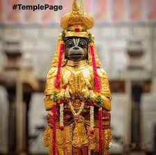

NAMAKKAL
NAMAKKAL SREE ANJANEYAR TEMPLE

Namakkal Anjaneyar temple is located in Namakkal, a town in Namakkal district in Tamil Nadu, India and is dedicated to the Hindu god Hanuman. It is constructed in the Tamil style of architecture.
The legend of the temple is associated with Narasimha, an avatar of Hindu god Vishnu appearing for Hanuman and Lakshmi. The image of Anjaneyar is 18 ft (5.5 m) tall, making it one of the tallest images of Hanuman in India. The temple follows the Vaikhanasa tradition.
The temple has a pillared hall leading to the sanctum. Four daily rituals and many yearly festivals are held at the temple, of which fifteen-day Panguni Uthiram festival celebrated during the Tamil month of Panguni (March - April) when the image of presiding deities are taken around the streets of the temple, being the most prominent.
The temple is maintained and administered by the Hindu Religious and Charitable Endowments Department of the Government of Tamil Nadu.